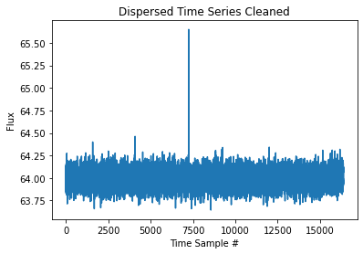

Detect Pulses¶
We’ll detect a pulse get info and repeat with RFI mitigation from JESS
[1]:
import tempfile
from urllib import request
import jess.JESS_filters as Jf
import matplotlib.pyplot as plt
import numpy as np
from jess.fitters import median_fitter
from scipy.stats import median_abs_deviation
from will import detect
from your import Your
from your.formats.filwriter import make_sigproc_object
[2]:
def show_dynamic(
dynamic_spectra: np.ndarray, title: str = None, save: bool = False
) -> None:
"""
Show a dynamic spectra by first flattening it
in frequency. Do this by getting the medians of
each channel and then run a median filter along the
bandpass.
Then set the limits of the imshow so we get good detail
for the majority of the data.
Args:
dynmaic_spectra - the dynamic spectra to plot
title - Title of plot
save - Save the plot as `title` + `.png`
"""
spectra_mads = median_fitter(np.median(dynamic_spectra, axis=0))
flat = dynamic_spectra - spectra_mads
std = median_abs_deviation(flat, axis=None)
med = np.median(flat)
plt.figure(figsize=(20, 10))
plt.imshow(flat.T, vmin=med - 3 * std, vmax=med + 6 * std, aspect="auto")
plt.xlabel("Time Sample #", size=20)
plt.ylabel("Channel #", size=20)
plt.colorbar()
plt.tight_layout()
if title is not None:
plt.title(title, size=28)
if save:
plt.savefig(title + ".png", dpi=200, bbox_inches="tight")
Get chunk of search mode dynamic spectra¶
[3]:
# a temp directory
temp_dir = tempfile.TemporaryDirectory()
B1828_fil = temp_dir.name + "/B1828.fil"
request.urlretrieve("https://zenodo.org/record/5866463/files/B1828.fil", B1828_fil)
[3]:
('/tmp/tmpbboaxlsf/B1828.fil', <http.client.HTTPMessage at 0x7f901d2cf2e0>)
[4]:
yr_obj = Your(B1828_fil)
dynamic_spectra = yr_obj.get_data(0, 16384)
[5]:
show_dynamic(dynamic_spectra, title="Pulsar B1828-11")
Make the dedispersed time series¶
[6]:
time_series = detect.dedisped_time_series(
dynamic_spectra,
dm=159.70, # from psrcat
tsamp=yr_obj.your_header.tsamp,
chan_freqs=yr_obj.chan_freqs,
)
[7]:
plt.title("Dispersed Time Series")
plt.xlabel("Time Sample #")
plt.ylabel("Flux")
plt.plot(time_series)
[7]:
[<matplotlib.lines.Line2D at 0x7f9019151cd0>]
Detect Pulses¶
[8]:
sigma = 6
pulses = detect.detect_all_pulses(time_series, box_car_length=8, sigma=sigma)
print(f"Time series Standard Deviation: {pulses.std:.3f}")
Time series Standard Deviation: 0.099
[9]:
plt.title(f"Locations with SNR > {sigma}")
plt.plot(pulses.locations, pulses.snrs, "+")
plt.ylabel("SNR")
plt.xlabel("Locations")
[9]:
Text(0.5, 0, 'Locations')
We have a range of points because the pulse is over several boxcars
Find largest pulse over range¶
[10]:
print(detect.find_max_pulse(pulses, 7000, 8000))
MaxPulse(location=7254, snr=27.901931791973993)
The GREENBURST pipeline reported an SNR of 28.4 (this pipeline has RFI mitigation, so some difference is expected)
Repeat with RFI Mitigation¶
[11]:
mad_cleaned = Jf.mad_spectra_flat(dynamic_spectra, sigma=4)
fft_cleaned = Jf.fft_mad(mad_cleaned.dynamic_spectra, sigma=4)
print(
f"MAD Flagged: {mad_cleaned.percent_masked:.2f}, FFT Flagged: {fft_cleaned.percent_masked:.2f}, Total: {mad_cleaned.percent_masked+fft_cleaned.percent_masked:.2f}"
)
/home/joseph/python/miniconda3/envs/kpe/lib/python3.8/site-packages/numpy/lib/nanfunctions.py:993: RuntimeWarning: All-NaN slice encountered
result = np.apply_along_axis(_nanmedian1d, axis, a, overwrite_input)
/home/joseph/python/miniconda3/envs/kpe/lib/python3.8/site-packages/jess/calculators.py:418: RuntimeWarning: Mean of empty slice
spectra_means = np.nanmean(dynamic_spectra, axis=0)
MAD Flagged: 1.25, FFT Flagged: 0.36, Total: 1.61
[12]:
show_dynamic(fft_cleaned.dynamic_spectra, title="Cleaned - Pulsar B1828-11")
[13]:
time_series_clean = detect.dedisped_time_series(
fft_cleaned.dynamic_spectra,
dm=159.70, # from psrcat
tsamp=yr_obj.your_header.tsamp,
chan_freqs=yr_obj.chan_freqs,
)
[14]:
plt.title("Dispersed Time Series Cleaned")
plt.xlabel("Time Sample #")
plt.ylabel("Flux")
plt.plot(time_series_clean)
[14]:
[<matplotlib.lines.Line2D at 0x7f9018f3a550>]

[15]:
pulses_clean = detect.detect_all_pulses(
time_series_clean, box_car_length=8, sigma=sigma
)
print(f"Time series Standard Deviation: {pulses_clean.std:.3f}")
Time series Standard Deviation: 0.080
[16]:
plt.title(f"Locations with SNR > {sigma}")
plt.plot(pulses_clean.locations, pulses_clean.snrs, "+")
plt.ylabel("SNR")
plt.xlabel("Locations")
[16]:
Text(0.5, 0, 'Locations')
[17]:
print(detect.find_max_pulse(pulses_clean, 7000, 8000))
MaxPulse(location=7253, snr=33.44802201410966)
[ ]: